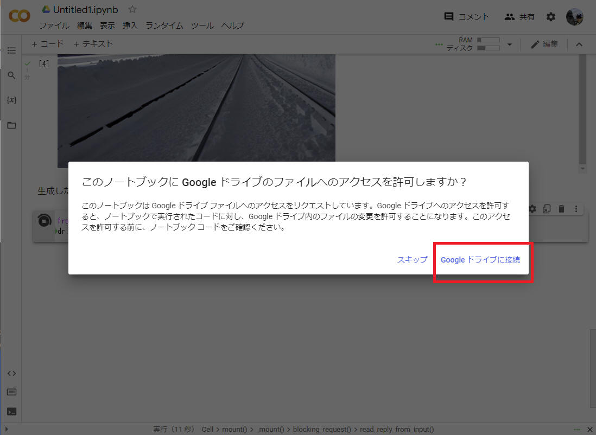

"Stable Diffusion" による画像生成を "Google Colaboratory" で実行する
オープンソースで公開されて話題の “Stable Diffusion” を “Google Colaboratory”
上で実行するまでの流れを本資料にまとめます。
オープンソースで公開されて話題の “Stable Diffusion” を “Google Colaboratory” 上で実行するまでの流れを本資料にまとめます。
"Stable Diffusion" は、任意のテキスト入力に対して写真のようなリアルな画像を出力する text-to-image のモデルです。ソースコードは Github (CompVis/stable-diffusion:
A latent text-to-image diffusion model (github.com)) で公開されています。

今回は、主に自然言語処理を対象にした大規模なオープンソースコミュニティーである “Hugging Face”
より訓練済みモデルをダウンロードしてこれを使用することで行います。

図： "Stable Diffusion" による作図例（私自身で Google Colaboratory
を使って作成）
文例： "The train came out of the long tunnel into the snow country"
まず https://huggingface.co/ へアクセスして [Sign Up] （アカウント作成）します。

図： Hugging Face ホームページ画面
「Sign Up」を完了すると下図のような画面を表示しました。

図： Hugging Face ホームページ画面
登録したメールアドレスへ [Hugging Face] から確認メールが届くので、メール本文に記載のリンクをクリックして確認を完了します。
登録を終えたら「Settings > Access Tokens > New token」をクリックして自分のアクセストークンを発行し、記録しておきます。
図： "Access Tokens" 画面
”Role” は ”read” を選択しましたがこれで大丈夫でした。

図： “Create a new access token” 画面
”Generate a token” ボタンをクリックすると、下図のような画面を表示します。

図： Access Tokens 取得画面
上図の [Show] をクリックして赤枠部分に表示するトークンを、後で使うので、保存しておきます。
続いて、"CompVis/stable-diffusion-v1-4 · Hugging Face" 内の「Access Repository」をクリックすることで権限を取得しておきます。この操作でモデルの作者にメールアドレスとユーザー名が共有されますのでご注意ください。
注意
モデルの使用にあたっては CreativeML OpenRAIL License へ準拠する必要があります。
意図的に違法または有害な出力やコンテンツを作成・共有することの禁止や再配布のルールなどについて同意する必要があります。
Stable Diffusion を使うための事前準備を完了したので、Google Colab 上に実行環境を構築していきます。
Google
Colaboratory（グーグル・コラボレイトリー）とは、Googleが機械学習の教育及び研究用に提供しているインストール不要かつ、すぐにPythonや機械学習・深層学習の環境を整えることが出来る無料のサービスです。
表： "Google Colaboratory" 無料版と有料版の比較
| 項目 |
無料版 |
Colab Pro |
Colab Pro+ |
| 料金 |
無料 |
1,072円 / 月 |
5,243円 / 月 |
| GPU |
自動割当 |
高性能 GPU が割当てられる |
高性能 GPU が割当てられる |
| メモリ |
通常使用には問題ない |
大量データ用 |
大量データ用 |
| 使用時間 |
最長12時間 |
最長24時間 |
最長24時間 |
| バックグラウンド実行 |
× |
× |
○ |
「ファイル」⇨「ノートブックを新規作成」をクリックします。
作成したノートブックにいろいろな処理をこれから記載していきます。
実行環境でGPUを使用するために「編集」⇨「ノートブックの設定」からGPUを割り当てます。

GPU の設定を正しく行えたことを以下のコードで確認します。
!nvidia-smi -L

または -L 無しで !nvidia-smi を入力します。

本ページ記載時の場合、GPU0 として “Tesla T4“ を使えるみたいです。
RAMは15GBという大きなサイズのGPUみたいです。これを無料で使用できるのはすごい！
下記コマンドで、Stable Diffusion および必要なパッケージをインストールします。
!pip install --upgrade diffusers==0.2.4 transformers==4.* scipy==1.* ftfy==6.*

Stable Diffusionのモデルのダウンロードやパイプラインの構築を行います。
あらかじめ発行した “Hugging Face” のアクセストークンを YOUR_TOKEN に設定し、以下のコードを実行します。
from diffusers import StableDiffusionPipeline
YOUR_TOKEN = "your-access-token"
model_id = "CompVis/stable-diffusion-v1-4" #@param {type:"string"}
pipe = StableDiffusionPipeline.from_pretrained(model_id, use_auth_token=YOUR_TOKEN)
pipe.to("cuda")

画像を生成します。生成したい画像の内容を text に記述し、以下のコードを実行します。
下記例では "The train came out of the long tunnel into the snow country" を設定してます。
from IPython.display import display_png, Image
from torch import autocast
text = "The train came out of the long tunnel into the snow country"
num = 3
for i in range(num):
image = pipe(text)["sample"][0]
file_name = "{}_{}.png".format(text,i)
image.save(file_name)
display_png(Image(file_name))
以下、上記 text を実行した結果の例です。それぞれの作図に約30秒で出力してくれました。


図： display_png 関数を notebook で実行した様子
生成した画像をGoogleドライブに保存してみます。
まずはGoogleドライブをマウントするために以下のコードを実行します。
from google.colab import drive
drive.mount("/content/drive")
これを実行すると下図のような画面を表示するので、［Google ドライブに接続］をクリックします。

図： Google ドライブをマウント
画像を生成します。
パラメータを設定して以下のコードを実行します。
- prompt ： 生成したい画像の内容
- number_of_images ： 生成する画像数
- drive_directory ： 保存先ドライブのディレクトリ
import datetime
import os
from torch import autocast
#@title Parameters
prompt = "The train came out of the long tunnel into the snow country" #@param {type:"string"}
number_of_images = 3 #@param {type:"slider", min:1, max:100, step:1}
drive_directory = "/content/drive/MyDrive/output" #@param {type:"string"}
# 画像の保存先となるディレクトリがなければ作成する。
os.makedirs(drive_directory, exist_ok=True)
# 画像のファイル名が被らないようにするための文字列を用意する。
yyyymmddhhmmss = datetime.datetime.now().strftime("%Y%m%d%H%M%S")
# 指定した回数、画像生成＆保存を繰り返す。
for i in range(number_of_images):
with autocast("cuda"):
image = pipe(prompt)["sample"][0]
file_path = os.path.join(drive_directory, f"image-{yyyymmddhhmmss}-{i:03}.png")
image.save(file_path)
display_png(Image(file_path))
画面右側の部分で GUI 上で設定変更できるようになりました。
図： GUI にパラメータ表示
この python プログラムを実行することで、Google ドライブへ画像を出力できました。
図： Google ドライブへ出力
以下、文言と Stable Diffusion が作成した図のペア、の例を紹介します。
すべて私自身で文章と図を作成してみた結果です。
（日）ロングソードを持った鎧の騎士が森の中で岩に座っている写真
text = "a photo of a knight armed with a long sword, sitting on a rock, in a forest"
（日）五匹のかわいい猫が庭で遊んでいる
text = "Five cute cats, play in the garden"

（日）春はあけぼの、ようよう白く成りゆく山際、少し明かりて、紫だちたる雲の細くたなびきたる
text = "In the dawn of spring, the mountains are turning white, and the purple clouds are trailing thinly with a little light."
（日）国際宇宙ステーションが見える宇宙空間で遊ぶ美しい女性
text = "Beautiful woman playing in outer space with a view of the International Space Station"


（日）ノートルダム寺院、ムンク風
text = "Notre Dame, Munch style"
本ページの情報は、特記無い限り下記 MIT ライセンスで提供されます。
The MIT License (MIT)
Copyright © 2022 Kinoshita Hidetoshi
Permission is hereby granted, free of charge, to any person obtaining a copy
of this software and associated documentation files (the "Software"), to deal
in the Software without restriction, including without limitation the rights
to use, copy, modify, merge, publish, distribute, sublicense, and/or sell
copies of the Software, and to permit persons to whom the Software is
furnished to do so, subject to the following conditions:
The above copyright notice and this permission notice shall be included in all
copies or substantial portions of the Software.
THE SOFTWARE IS PROVIDED "AS IS", WITHOUT WARRANTY OF ANY KIND, EXPRESS OR
IMPLIED, INCLUDING BUT NOT LIMITED TO THE WARRANTIES OF MERCHANTABILITY,
FITNESS FOR A PARTICULAR PURPOSE AND NONINFRINGEMENT. IN NO EVENT SHALL THE
AUTHORS OR COPYRIGHT HOLDERS BE LIABLE FOR ANY CLAIM, DAMAGES OR OTHER
LIABILITY, WHETHER IN AN ACTION OF CONTRACT, TORT OR OTHERWISE, ARISING FROM,
OUT OF OR IN CONNECTION WITH THE SOFTWARE OR THE USE OR OTHER DEALINGS IN THE
SOFTWARE.